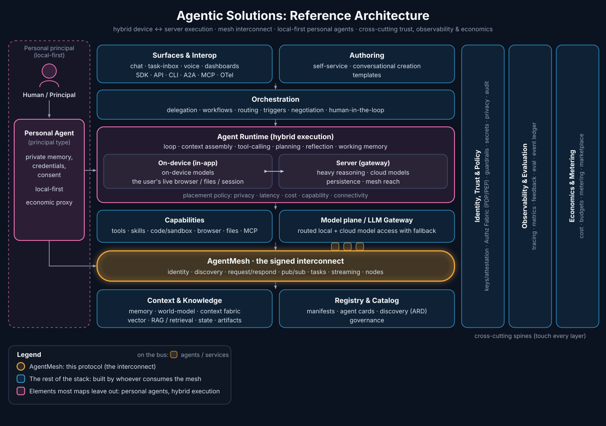

Where AgentMesh fits
A reference architecture for agentic solutions has many moving parts. AgentMesh is one of them: the connective substrate that lets all the others reach each other. Here is the whole picture, and the slice AgentMesh occupies.

the picture
The shape of an agentic solution
Strip an agentic system down and the same elements keep appearing: a runtime that runs the agent loop, the capabilities it can act with (tools, skills, code, the browser), the context and knowledge it reasons over, an orchestration layer that coordinates several agents, a model plane that routes to language models, and the surfaces people and programs meet it through. Running through all of them are three cross-cutting spines: identity, trust and policy; observability and evaluation; and economics and metering.
Two elements most maps leave out, but that matter as agents leave the data center: the personal agent (a human's local-first proxy, holding private memory, credentials, and consent) and hybrid execution (one runtime that spans an on-device side and a server side, placing each piece of work where privacy, latency, cost, and connectivity say it belongs).
the slice
AgentMesh is the interconnect
AgentMesh occupies exactly one box: the interconnect, the amber pill in the diagram. It is the signed agent-to-agent protocol that lets any agent discover and talk to any other over a single substrate, instead of every pair wiring up its own point-to-point connection. Everything else in the diagram is a part; AgentMesh is how the parts reach each other.
Concretely it provides six primitives (register, discover, request, respond, emit, subscribe), agent and node identity, an optional task lifecycle, streaming, and presence. See how the six primitives work →
The interconnect also has a door to the HTTP world: the A2A bridge lets stock A2A clients call mesh agents and puts external A2A servers on the mesh, both directions vouched by a bridge node.
on the wire
It carries the cross-cutting spines
Three of the spines are not abstract policy on an agent network: they live on the wire, and the interconnect is where they land.
- Identity and trust. Every envelope is signed by the sending agent, and a node vouches for the agents it hosts, so the from field stays verifiable no matter which connection carried the message.
- Observability. Trace context rides in the envelope, so a request's path across a chain of agents can be reconstructed end to end.
- Economics. Agents can declare cost in their manifests and the mesh can emit metering events, giving the economic layer real signal to act on.
at the edge
It makes personal agents and hybrid execution real
The two newer elements lean on the interconnect more than on anything else in the stack.
- Personal agents. AgentMesh's node model lets one host hold a single credentialed connection and vouch for many agents, reachable over an outbound-only connection, with presence that tolerates a sleeping laptop. A personal agent behind a home firewall becomes a first-class peer, with no per-agent credential ceremony.
- Hybrid execution. The mesh gives location transparency: an agent does not know or care whether its peer runs on-device or in the cloud. The same protocol spans the device and server sides, so work moves across that boundary freely.
the boundary
What it deliberately is not
AgentMesh is the interconnect, not the runtime, the orchestrator, or the model gateway. Keeping it a thin, signed protocol is the point: the other elements stay swappable and are built by whoever consumes the mesh. A host that consumes the mesh, for instance, builds its runtime and orchestration on top of AgentMesh rather than inside it. More on what it deliberately doesn't standardize →
Ready to go deeper? Read the full specification or pick up an SDK.